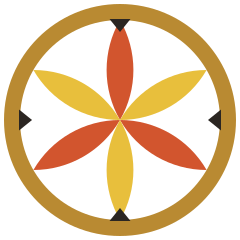

OASP Capture · C1 Demo
Testversion für Vorführung und Übung – nicht für den produktiven Einsatz. Jede Zeile wird trotzdem doppelt gesichert; nach der Übung exportieren.
Projektdaten (bleiben für alle Messtage)
Die Projektdaten kommen in den Export (projekt.json, Kopf von punkte.csv). Die Rohdatei raw.gsi bleibt unverändert.
Nicht verbundenSitzung wird geladen …
0Zeilen gesichert
0davon Messungen
0Fragmente
0Abbrüche
Messtag
Punkte aus dem TS07-Speicher nachholen
Wenn intern gespeichert wurde (Tablet aus, Akku leer, Verbindung schlecht): verbinden, hier „Speicher empfangen“ tippen, dann am TS07 Export → Zu: Schnittstelle, Job wählen, „Weiter“. Ohne Bluetooth: GSI-Datei vom USB-Stick einlesen. Nachgeholte Zeilen werden gekennzeichnet; ihre Zeit ist die Empfangszeit, nicht die Messzeit. Eine Übertragung wird auch ohne Knopfdruck an der schnellen Zeilenfolge erkannt.
Lageplan
Karte wird geladen …
Letzte Zeilen
| # | PID | Aufst. | Hinweis | E | N | H | Zeit |
|---|
Messtag sichern und abschließen
Ein neuer Messtag beginnt automatisch beim ersten Start an einem neuen Tag. „Tag abschließen“ erzeugt das Tagespaket (ZIP) und beginnt einen neuen Messtag; das Projekt bleibt.
ArchServ-Codes (Erinnerung)
Punktnummer am TS07: SSSS Y ZZ NNN – SE (4) · Gruppe/Eigenschaft (1 Buchstabe) · Typ (2) · laufende Nummer (3). Beispiel 0037B03005 = SE 37, Fläche B, Punkt 5.
Fund (71): 5. Stelle = Kategorie, NNN = Fundnummer. Probe (51): 5. Stelle = Probenart, NNN = Probennummer. Pfostenloch (61): 5. Stelle = Durchmesser A = 1 cm … Z = 26 cm. Grenzen, Fixpunkte: SE 0000 oder 9999.
Simulator (ohne Instrument, nur Test)
Erzeugt GSI16-Zeilen und läuft durch denselben Speicherweg wie echte Daten.
Einstellungen
Bei Bluetooth (RFCOMM) spielt die Baudrate keine Rolle; bei Kabel muss sie zum TS07 passen.